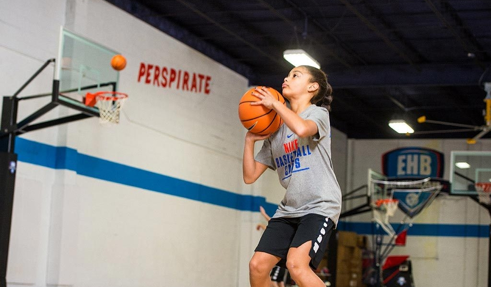

Michael and Michelle’s March Madness
OUR SERVICES
Michael and Michelle’s March Madness offers several basketball camps and training services for all ages and skill levels!
Our services are provided for anyone who enjoys the art of basketball as much as we do. Whether you or your child is looking to play competitively, train under professional coaches and players, or simply just wanting to imrpove your basic skills and fundamental knowledge, we have a wide variety of options for people of all shapes and sizes.

This year, our services include:
Shooting Camps: Our seasonal shooting camps are a game changer for young athletes looking to train under talented and knowledgeable coaches and step up their game, specifically targeting areas such as shooting, dribbling, ball-handling, and passing.
Pro Player Camps: These intense two-week camps are offered to intermediate to advanced athletes 18+ looking for an opportunity to train under professional basketball players and improve their competitive gameplay, and provides personal tips and tricks to become a master of the court.
Private Lessons: Ever wanted to improve your skills with one-on-one training under the best coaches and players? Our private lessons are offered to all ages and allow you or your child to improve in all areas of gameplay, tailored specifically to your needs.
Introduction to Hoops: These lessons are for beginner to intermediate level athletes of all ages who are looking to sharpen their skills and get more serious on the court. If you are just starting out and aspiring to be the best, or returning to basketball and wanting to refresh your skills on the court, these lessons are for you.
Team Games: There's no better way to learn than by putting yourself on the court and playing a good game of basketball. Therefore, we offer weekly 10v10 games to a wide variety of age levels that are specifically made to enhance gameplay, encourage teamwork, and improve skills on the court.
If our location doesn't work out for you, we encourage you to check out Nike Basketball Camps to find camps near you!
Interested in any of the services provided? Don't hesistate, follow the steps below to sign up now!
1. Download our sign up sheet here!
2. Fill out the information in the spaces provided.
3. Email the completed form to the address provided at the bottom of this page.
4. Sit back and relax! You'll hear back from us ASAP.
Email your completed form here, or contact us for more information!
Email Me
Written by: Arslan Orashev
Last modified: